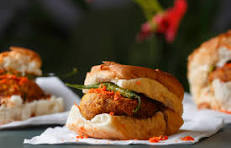
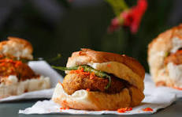
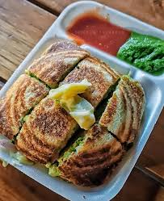
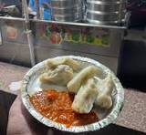
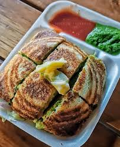
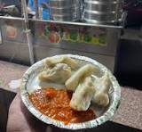

Street Food Guide for First-Time Visitors to Ahmedabad
Discover the best street food in Ahmedabad, famous snacks, night food markets, and tourist-friendly food spots.
Read More𝓕𝓲𝓻𝓼𝓽 𝔀𝓮 𝓮𝓪𝓽,𝓣𝓱𝓮𝓷 𝔀𝓮 𝓭𝓸 𝓮𝓿𝓮𝓻𝔂𝓽𝓱𝓲𝓷𝓰 𝓮𝓵𝓼𝓮.𝓕𝓸𝓸𝓭 𝓲𝓼 𝓶𝔂 𝓯𝓾𝓮𝓵 𝓪𝓷𝓭 𝓽𝓻𝓾𝓮 𝓵𝓸𝓿𝓮
Dive into our flavorful culinary offerings.

 

 



Discover our stalls in multiple vibrant locations.
Open daily from 4 PM - 1 AM.
Our story of authentic spice and Gujarat's flavor.


Open: 8:00 PM - 1:00 AM | Stall #15
Open: 4:00 PM - 11:00 PM | Near Entrance B
Open: 11:00 AM - 10:00 PM | Near Pantheon Complex
Ahmedabad Street Eats was born out of a passion for preserving and celebrating the authentic flavors of Gujarat. Our founders, a family of dedicated food lovers, began with a small handcart in Manek Chowk over two decades ago. We believe that street food is the true soul of a city.
Every dish, from the perfect tang of our Locho to the fiery spice of our Dalwada, is prepared using age-old family recipes and the freshest, locally sourced ingredients. Our mission is to provide an unforgettable, hygienic, and affordable culinary experience that reflects the warmth and heritage of Ahmedabad. Come, taste the tradition!
Discover the best street food in Ahmedabad, famous snacks, night food markets, and tourist-friendly food spots.
Read MoreA cultural and food tradition of Gujarat explained, focusing on the iconic Fafda-Jalebi breakfast combo.
Read MoreThe fun, flavorful story behind Ahmedabad’s cheese obsession
Read More